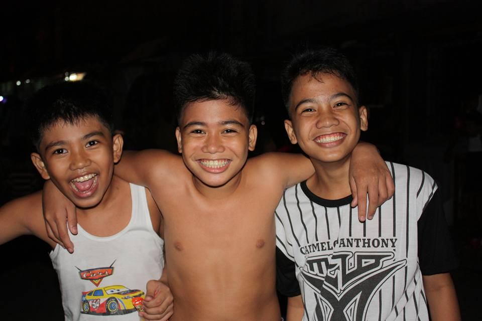

The Beginning
A time of discovery for me because this is my first time to actually be separated from my parents, not unlike when I was a kindergarten, also it`s one of the memorable days of my life because I met my best friend for 6 years there.

- Memories: I play a lot of sports, and it`s very fun.
- Favorite Moments: Having fun with my friends while playing sports.